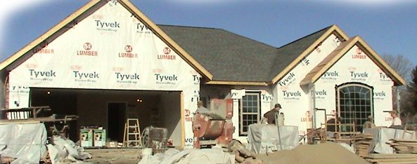

Built for your
next chapter.
New construction, remodeling, excavation and foundation work.

Larry Fouss Construction has been a leader in the Mid-Ohio Valley Community for more than 40 years. Our company has a reputation for quality service performed quickly at a reasonable cost. We are your leader for excavation, poured concrete walls , new construction, remodeling and foundation work.
Our company also sells, services, installs and pumps out septic tanks. We manufacture our own precast concrete septic tanks at our shop. Contact us today for your free estimate and let us make your next project a success.
We are licensed in Ohio and West Virginia for general contracting. In addition to this, we also carry a variety of materials for the installation and maintenance of septic tanks. This includes Infiltrator Chambers, Jet Inc. motors and maintenance products and Oldham motors.
Request a free estimate ↗A strong start.
A finished vision.
- 01Excavation↗
- 02New construction↗
- 03Remodeling↗
- 04Foundation work↗